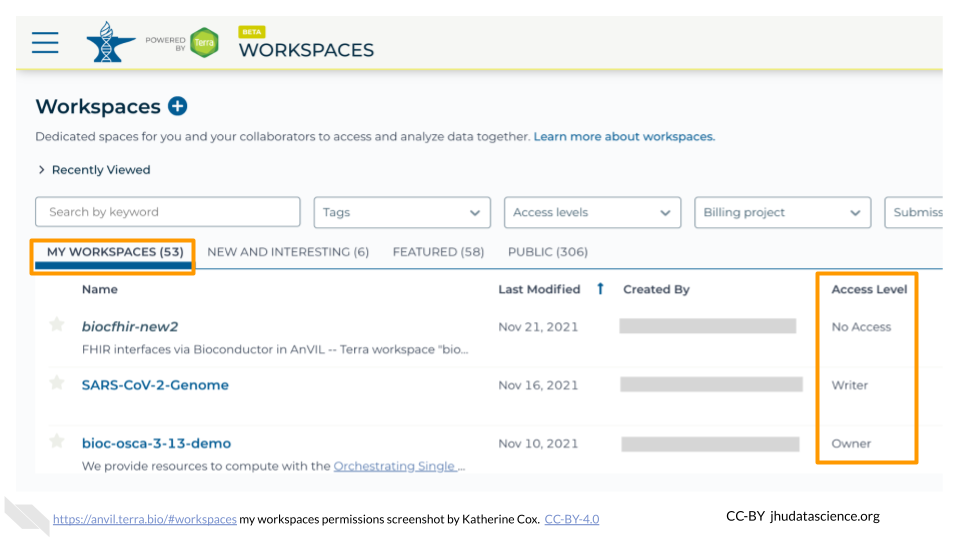
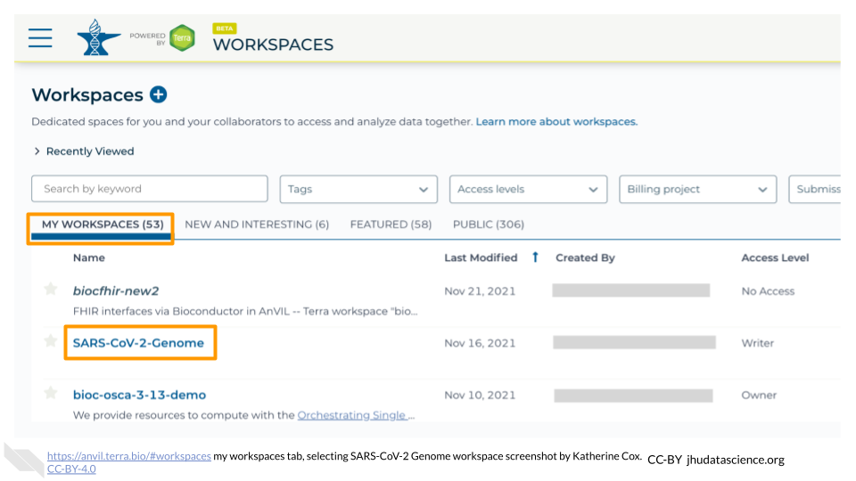
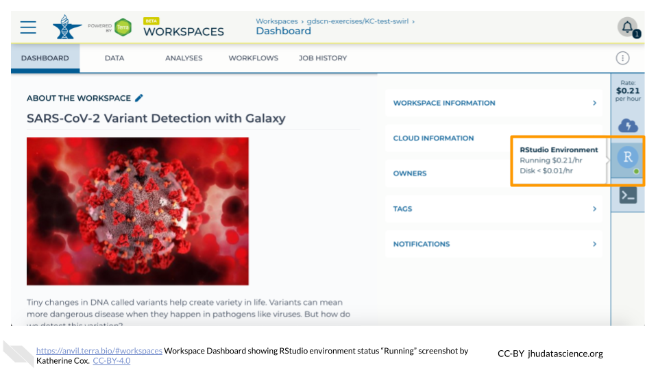
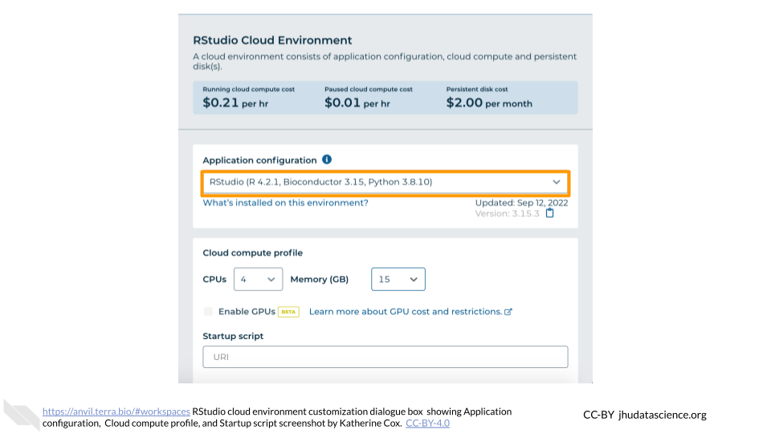

Chapter 8 Student instructions
Modules aimed at students in a course or workshop.
8.1 Student Account Setup
In order to run your analyses, you will use the AnVIL cloud computing platform, so that you do not need to install everything on your own computer. The AnVIL (Analysis Visualization and Informatics Lab-space) platform is specially designed for analyzing biological data, and is used by scientists doing all sorts of biological research.
AnVIL in a nutshell
- Behind the scenes, AnVIL relies on Google Cloud Platform to provide computing infrastructure. Basically, AnVIL lets you “rent” computers from Google (remotely). Whenever you run an analyses on AnVIL, it actually runs on one of Google’s computers, and AnVIL lets you see the results in your browser.
- AnVIL uses Terra to provide many computational tools useful for biological data analysis, such as RStudio, Galaxy, and Jupyter Notebooks. Terra takes care of installing these tools on Google’s computers, so that you can just start using them.
8.1.1 Create Google Account
First, you will need to set up a (free) Google account.
If you do not already have a Google account that you would like to use for accessing AnVIL, create one now.
- Alternatively, if you would like to create a Google account that is associated with an existing non-Gmail email address, you can follow these instructions.
8.1.2 Log In to Terra
Next, make sure you can log in to Terra – you will use Terra to perform computations on AnVIL.
You can access Terra by going to anvil.terra.bio, or by clicking the link on the AnVIL home page.

Open Terra, and you should be prompted to sign in with your Google account.
8.2 Student instructions for cloning a Workspace
These instructions can be customized to a specific workspace by setting certain variables before running cow::borrow_chapter(). If these variables have not been set, reasonable defaults are provided (e.g. “ask your instructor”).
8.2.1 With no variables set:
This will not work until your instructor has given you permission to spend money to “rent” the computers that will power your analyses (by adding you to a “Billing Project”).
On AnVIL, you access files and computers through Workspaces. Each Workspace functions almost like a mini code laboratory - it is a place where data can be examined, stored, and analyzed. The first thing we want to do is to copy or “clone” a Workspace to create a space for you to experiment. This will give you access to
- the files you will need (data, code)
- the computing environment you will use
Tip At this point, it might make things easier to open up a new window in your browser and split your screen. That way, you can follow along with this guide on one side and execute the steps on the other.
To clone an AnVIL Workspace:
Open Terra - use a web browser to go to
anvil.terra.bioIn the drop-down menu on the left, navigate to “Workspaces”. Click the triple bar in the top left corner to access the menu. Click “Workspaces”.

You are automatically directed to the “MY WORKSPACES” tab. Here you can see any Workspaces that have been shared with you, along with your permission level. Depending on how your instructor has set things up, you may or may not see any Workspaces in this tab.

Locate the Workspace specified by your instructor. (The images below show the SARS-CoV-2-Genome Workspace as an example, but you should look for the Workspace specified by your instructor.)
- If it has been shared with you ahead of time, it will appear in “MY WORKSPACES”.

- Otherwise, select the “PUBLIC” tab. In the top search bar, type the Workspace name specified by your instructor.

- You can also go directly to the Workspace by clicking this link: ask your instructor.
Clone the workspace by clicking the teardrop button (
 ). Select “Clone”. Or, if you have opened the Workspace, you can find the teardrop button on the top right of the Workspace.
). Select “Clone”. Or, if you have opened the Workspace, you can find the teardrop button on the top right of the Workspace.

You will see a popup box appear, asking you to configure your Workspace
- Give your Workspace clone a name by adding an underscore (“_“) and your name. For example, "ExampleWorkspace_Firstname_Lastname".
- Select the Billing Project provided by your instructor.
- Leave the bottom two boxes as-is.
- Click “CLONE WORKSPACE”.

The new Workspace should now show up under “MY WORKSPACES”. You now have your own copy of the Workspace to work in.
8.2.2 With variables set:
This will not work until your instructor has given you permission to spend money to “rent” the computers that will power your analyses (by adding you to a “Billing Project”).
On AnVIL, you access files and computers through Workspaces. Each Workspace functions almost like a mini code laboratory - it is a place where data can be examined, stored, and analyzed. The first thing we want to do is to copy or “clone” a Workspace to create a space for you to experiment. This will give you access to
- the files you will need (data, code)
- the computing environment you will use
Tip At this point, it might make things easier to open up a new window in your browser and split your screen. That way, you can follow along with this guide on one side and execute the steps on the other.
To clone an AnVIL Workspace:
Open Terra - use a web browser to go to
anvil.terra.bioIn the drop-down menu on the left, navigate to “Workspaces”. Click the triple bar in the top left corner to access the menu. Click “Workspaces”.
You are automatically directed to the “MY WORKSPACES” tab. Here you can see any Workspaces that have been shared with you, along with your permission level. Depending on how your instructor has set things up, you may or may not see any Workspaces in this tab.
Locate the Workspace Example_Workspace. (The images below show the SARS-CoV-2-Genome Workspace as an example, but you should look for the Workspace Example_Workspace.)
- If it has been shared with you ahead of time, it will appear in “MY WORKSPACES”.
- Otherwise, select the “PUBLIC” tab. In the top search bar, type the Workspace name Example_Workspace.
- You can also go directly to the Workspace by clicking this link: http://example.com/.
Clone the workspace by clicking the teardrop button (
). Select “Clone”. Or, if you have opened the Workspace, you can find the teardrop button on the top right of the Workspace.
You will see a popup box appear, asking you to configure your Workspace
- Give your Workspace clone a name by adding an underscore (“_“) and your name. For example, "Example_Workspace_Firstname_Lastname".
- Select the Billing Project Example Billing Project.
- Leave the bottom two boxes as-is.
- Click “CLONE WORKSPACE”.
The new Workspace should now show up under “MY WORKSPACES”. You now have your own copy of the Workspace to work in.
8.3 Student instructions for launching RStudio
The module below is specially customized for students, allowing you to give more specific instructions on the settings for their RStudio environment. There are several other general purpose modules that may also be useful for students (e.g. Pausing RStudio, Deleting RStudio) that can be found in other chapters of this book.
The following instructions can be customized by setting certain variables before running cow::borrow_chapter(). Developers should create these variables as a list AnVIL_module_settings. The following variables can be provided:
audience= Defaults togeneral, telling them to use the default RStudio settings. Ifaudienceis set tostudent, it gives more specific instructions.docker_image= Optional, it will tell them to open the customization dialogue and direct them on how to set the image.startup_script= Optional, it will tell them to open the customization dialogue and direct them on how to set the script.
8.3.1 Using default RStudio environment:
AnVIL is very versatile and can scale up to use very powerful cloud computers. It’s very important that you select the cloud computing environment described here to avoid runaway costs.
Open Terra - use a web browser to go to
anvil.terra.bioIn the drop-down menu on the left, navigate to “Workspaces”. Click the triple bar in the top left corner to access the menu. Click “Workspaces”.

Click on the name of your Workspace. You should be routed to a link that looks like:
https://anvil.terra.bio/#workspaces/<billing-project>/<workspace-name>.Click on the cloud icon on the far right to access your Cloud Environment options.

In the dialogue box, click the “Settings” button under RStudio

You will see some details about the default RStudio cloud environment, and a list of costs because it costs a small amount of money to use cloud computing.

Click the “CREATE” button.

The dialogue box will close and you will be returned to your Workspace. You can see the status of your cloud environment by hovering over the RStudio logo. It will take a few minutes for Terra to request computers and install software.

When your environment is ready, its status will change to “Running”. Click on the RStudio logo to open a new dialogue box that will let you launch RStudio.

Click the launch icon to open RStudio. This is also where you can pause, modify, or delete your environment when needed.

You should now see the RStudio interface with information about the version printed to the console.

8.3.2 Using custom RStudio environment:
AnVIL is very versatile and can scale up to use very powerful cloud computers. It’s very important that you select the cloud computing environment described here to avoid runaway costs.
Open Terra - use a web browser to go to
anvil.terra.bioIn the drop-down menu on the left, navigate to “Workspaces”. Click the triple bar in the top left corner to access the menu. Click “Workspaces”.
Click on the name of your Workspace. You should be routed to a link that looks like:
https://anvil.terra.bio/#workspaces/<billing-project>/<workspace-name>.Click on the cloud icon on the far right to access your Cloud Environment options.
In the dialogue box, click the “Settings” button under RStudio
You will see some details about the default RStudio cloud environment, and a list of costs because it costs a small amount of money to use cloud computing.
Click “CUSTOMIZE” to adjust the settings for your environment.

Under “Application configuration” you will see a dropdown menu. You can also enter text here. Copy the following link into the box:
example docker
Under “Startup script” you will see textbox. Copy the following link into the box:
example startup script
Leave everything else as-is. To create your RStudio Cloud Environment, click on the “CREATE” button.

The dialogue box will close and you will be returned to your Workspace. You can see the status of your cloud environment by hovering over the RStudio logo. It will take a few minutes for Terra to request computers and install software.
When your environment is ready, its status will change to “Running”. Click on the RStudio logo to open a new dialogue box that will let you launch RStudio.
Click the launch icon to open RStudio. This is also where you can pause, modify, or delete your environment when needed.
You should now see the RStudio interface with information about the version printed to the console.